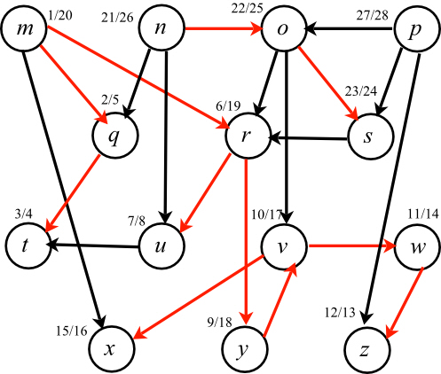
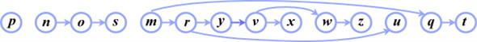

Topological Sorting
Topological sorting is a method of linear ordering of the vertices of a directed graph, such that if there is a directed edge xy from vertex x to vertex y, then x comes before y in the ordering. This sorting technique is based on the strategy of Depth First Search (DFS).
Consider a task that is to be performed. In a directed acyclic graph (dag), the vertices of the directed graph represent the tasks, the edges represent the constraint to be performed on the task, and a topological ordering is the valid sequence of the task.
Topological sorting is only possible if the graph has no directed cycles, that is, it is a directed acyclic graph. The vertices are ordered in a horizontal line such that all the directed edges go from left to right. In this linear ordering of vertices or nodes, if any edge or set of edges direct to left, then it is not a valid solution or ordering.
It is also possible for a graph to have more than one valid linear ordering of vertices for a topological sort.
Algorithm:
// Topological sort algorithm in a graph using DFS concept
E  Empty list
that contains the sorted elements
Empty list
that contains the sorted elements
I Set of all
nodes which have no incoming edges
while S is non-empty
do
remove a node n from I
insert n into E
for each node m with an edge e from n to m
do
remove edge e from the graph
if m has no other incoming edges then
insert m into I
if graph has edges then
return error (graph has at least one cycle)
else
return E (a topologically sorted order)
Consider the diagram given below:

Start traversing the directed acyclic graph given above from node m which is the starting node of the graph. Being a starting or a source node, its discovery time is taken as 1.
After visiting the source node m, the next node traversed is q. Thus, its discovery time is after node m, which is 2.
The node that will be traversed next is t, and its discovery time is taken as 3.
After t, there is no path or an edge directed towards any other node. Hence, the search or traversing cannot proceed in the forward direction and backtracking will start from this point.
Thus, after visiting t, backtrack to m and proceed in this way, incrementing the discovery time of each node accordingly, as per the order of traversing.
During the process, Finishing Time of each node is also considered which is the total time taken when all the vertices adjacent to a particular vertex are completely traversed in the process.
Here, finishing time for vertex t is 4 because traversing is done from m to t via q and again back to m. Thus, this time is considered when roles of q and t are completed during the track.
Table showing the Discovery Time and Finishing Time of each node is given below:
|
Vertex |
Discovery time |
Finishing time |
|
m |
1 |
20 |
|
n |
21 |
26 |
|
o |
22 |
25 |
|
p |
27 |
28 |
|
q |
2 |
5 |
|
r |
6 |
19 |
|
s |
23 |
24 |
|
t |
3 |
4 |
|
u |
7 |
8 |
|
v |
10 |
17 |
|
w |
11 |
14 |
|
x |
15 |
16 |
|
y |
9 |
18 |
|
z |
12 |
13 |
Thus, the topological order obtained is according to the finishing time of the vertices of the graph as shown in the table. As the finishing time of p is maximum, it is in the first position of the order. The second maximum is n and hence, it is next in the order. Similarly, other points are placed in the traversing process according to the descending order of their finishing time.
The resulting order is,

The above order has p as the starting point and t as the ending point. According to the above table, p has a finishing time of 28 units (maximum of all the vertex points) and t has a finishing time of 4 units.
Thus, this ordering of vertices is produced by TOPOLOGICAL-SORT, when it runs on the dag of the above diagram (graph).
The algorithm COUNT_SIMPLE_PATHS (x, y) is as follows:
COUNT_SIMPLE_PATH(x, y)
1 if (x==y)
2 return 1
3 else if x.path NIL
NIL
4 for each do
5 x.path=x.path+COUNT_SIMPLE_PATH(z, y)
6 end for
7 return x.path
8 end if
The algorithm works as follows:
• If the starting and the ending nodes are the same, return 1.
• Count the path, starting from the vertex x. At each point, the value of x is updated but the value of y is fixed.
• Now, sum the number of paths recursively, which leave from the starting node x’s neighbors, that is the nodes which are adjacent to x.
• Do not add the partially completed paths as there are no cycles.
• Return the number of paths which have been counted starting from the vertex x to y.
• The total number of executions are
• Thus, call the algorithm recursively.
A TOPOLOGICAL-SORT is a type of sorting algorithm which works on directed graphs. If the TOPLOGICAL-SORT is applied on a directed graph then it sorts the vertices of the graph in the linear order. That is, if the graph G contains an edge (u, v) then vertex u must come before vertex v in the linear order or sorted list.
• TOPOLOGICAL-SORT algorithm uses depth first search algorithm to find the finishing times of all vertices.
• Then adds a vertex to the sorted list, as soon as the vertex is finished.
• Finally it returns a linked list, in which there are edges from right to left only.
TOPOLOGICAL-SORT produces no linear ordering, if the graph contains a cycle:
• If the graph contains a cycle, then the TOPOLOGICAL-SORT cannot produces linear ordering, because the ordering contains inconsistent edges or bad edges.
• Here, bad edges are nothing but the back edges. A back edge is edge from a vertex to its ancestor.
• For example, consider a simple graph with three vertices a, b and c. and there are edges from a to b, b to c and c to a. Thus, the graph contains a cycle a->b->c->a.
• If DFS is applied on the graph, c finished first, then b and finally a.
• According to TOPOLOGICAL-SORT c is added first to the list, and then b is added next. Finally a is added last to the list. That is, the order is a-b-c.
• From the definition of linear order, if there is an edge (u,v) in the graph, then vertex u must appear before vertex v in the ordered list.
• There is an edge (c,a) in the graph, thus c must appear before a in the order. But, vertex a is appeared before c in the ordered list.
Therefore, TOPOLOGICAL-SORT does not produce linear order, if the graph contains a cycle.
TOPOLOGICAL-SORT does not minimize the bad edges:
• TOPOLOGICAL-SORT calls DFS first to find the finishing times of all vertices.
• According to Lemma 22.11, DFS yields back edges, if the graph G contains cycles. The number of back edges yielded equals to number of cycles in the graph.
• If TOPOLOGICAL-SORT is applied on the graph that contains cycles, then it produces a vertex ordering that contains back edges (bad edges).
• That is, the ordering contains edges from left to right. Here, the number of bad edges equals to number of back edges.
• Since the number of bad edges equals to number of cycles in the graph, TOPLOGICAL-SORT did not minimizes the bad edges.
Hence it is disproved that “if the graph contains cycles, TOPOLOGICAL-SORT produces vertex ordering that minimizes the number of bad edges”.
A Graph G has a cycle if and only if a back edge is encountered while DFS is running on that graph. An edge (u,v) is said to be a back edge, if v is an ancestor of u and v is visited before u. Hence, by running DFS algorithm on a graph, it can be determined that whether the graph is acyclic or not.
Now, consider the following algorithm that determines whether there is a cycle in an undirected graph or not.
Algorithm:
//Define the procedure DFS
DFS ( )
)
//for loop is used to iterate every nodes
1. for every vertex
//Set the color of the vertex as WHITE
2.
3.
//Set a global timestamp
4. //set a global timestamp
//for loop is used to iterate every nodes
5. for each vertex
//Check the color of the vertex is WHITE or not
6. if
// If the color of the vertex is WHITE then
//call DFS-VISIT- FINDCYCLE(G,p)
7. DFS-VISIT-FINDCYCLE(G,p)
//Definition of sub-procedure DFS-VISIT-FINDCYCLE(G,p)
DFS-VISIT-FINDCYCLE (G, )
)
//Set the color of the vertex as GREY
1.
//for loop is used to iterate every nodes q adjacent to p
2. for each
//check wether the edge (p,q) is a back edge or not
3. if
// If the above condition is true, then the edge (p,q) is a back
// edge. Thus return “cycle found”.
4. return “cycle found”
//If (p,q) is not a back edge, then set p as a predecessor of q.()
5. if
6.
//Call recursively DFS-VISIT-FINDCYCLE(G, )
)
7. DFS-VISIT-FINDCYCLE(G,)
8.
The above algorithm uses DFS() to find cycle in a graph. Since the graph may be disconnected so one should run DFS() on every vertex which has not been visited yet.
Explanation:
• The DFS() mentioned above is used to initialize the color predecessor and then FINDCYCLE routine is called to check if cycle exist with that particular node.
• In FINDCYCLE first line is used to color the vertex on which this routine is working.
• Now if any of the adjacent vertex is of color white that means it is unexplored, so adding that vertex to tree will not form a cycle and hence program run FINDCYCLE routine on that vertex.
• If any vertex is of color grey that means there already exist an edge to reach that vertex and if program add that vertex to that DFS tree it will result in cycle. So if program gets a grey vertex then it simply returns “cycle found”.
• Now consider a case in which there are actually two components of a graph and in first component there is no cycle but it exists in second component.
• In that case, all vertices in that component will be colored as grey. After this, function return to DFS () in which for loop again start searching white node which exist in second component and do the normal routine again.
Running time complexity of above algorithm:
• Since the above algorithm is the DFS algorithm with little
modification, the complexity should be  . But here
the actual complexity of the above algorithm is .
. But here
the actual complexity of the above algorithm is .
• An undirected and acyclic forest with  nodes
contains not more than
nodes
contains not more than  edges,
according to Properties of free trees. That is, .
edges,
according to Properties of free trees. That is, .
• Therefore, the above algorithm visits at most  edges.
edges.
Thus the time complexity of the algorithm is independent of and it is .